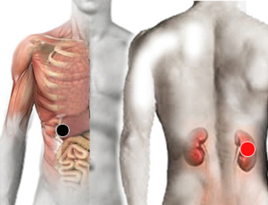

Cirrosis
Par
hígado- riñón (D)

Generalidades:
La Cirrosis es la cicatrización de aluguna porción del tejido del Hígado. La Cirrosis es consecuencia de un daño severo y crónico a este órgano.
Destruye el hígado, se confunde con Enfermedad Perihepática.
Los síntomas pueden incluir: nauseas, flatos frecuentes, anorexia, pérdida de peso, ascitis, (acumulción de liquidos en el abdomen). Angiomas (tumor benigno formado por vasos sanguineos). Varices esofágicas.
Causa:
Se debe a múltiples factores como algún tipo de hepatitis, alcoholismo, tóxicos (en alimentos, fármacos, drogas, etc.), enfermedades autoinmunes, hígado graso; son las más comunes.
Pares relacionados: